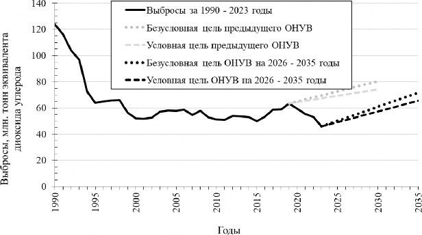
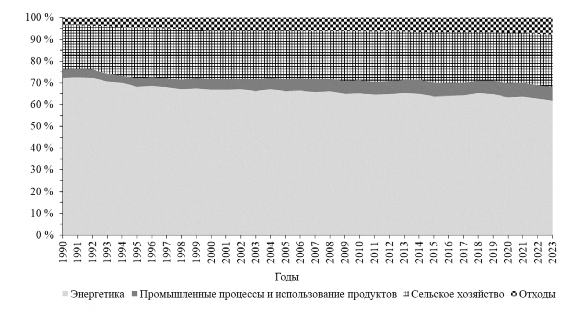
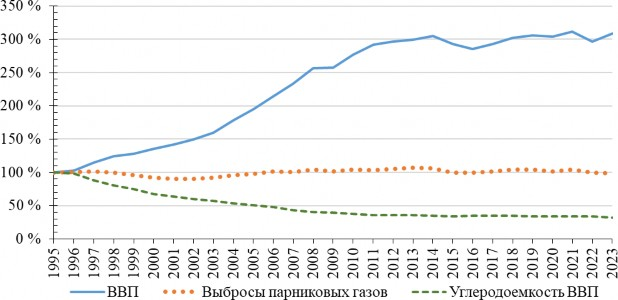

In accordance with paragraph 9 of Article 4 of the Paris Agreement and the Further Guidance in relation to paragraphs 24 and 25 of Section of Decision 1/CP.21 on the prevention of climate change (hereinafter – the Guidance), adopted in 2018 by Decision 4/CMA.1 of the Conference of the Parties to the United Nations Framework Convention on Climate Change of 9 May 1992 (hereinafter – the Framework Convention), serving as the meeting of the Parties to the Paris Agreement, the Republic of Belarus submits and, taking into account the time frames for updating greenhouse gas emission reduction targets, periodically updates its commitments to reduce greenhouse gas emissions.
The Republic of Belarus supports the collective efforts of the Parties to the Framework Convention and the Paris Agreement aimed at holding the increase in the global average temperature to well below 2°C above pre-industrial levels and pursuing efforts to limit the temperature increase to 1.5°C above pre-industrial levels.
The intended nationally determined contribution to the reduction of greenhouse gas emissions was submitted on 21 September 2015 to the secretariat of the Framework Convention prior to the ratification of the Paris Agreement. By this document, the Republic of Belarus undertook to reduce greenhouse gas emissions by 28 per cent by 2030 compared to the 1990 emission level, excluding greenhouse gas emissions and removals in the Land Use, Land-Use Change and Forestry sector (hereinafter – LULUCF) and without additional conditions, which should be understood as the use of international carbon market mechanisms and the attraction of external financial resources.
In accordance with Article 4 of the Paris Agreement, the Republic of Belarus has undertaken to submit to the secretariat of the Framework Convention every five years a nationally determined contribution of the Republic of Belarus to the reduction of greenhouse gas emissions (hereinafter, unless otherwise specified – NDC) and, in accordance with Article 14 of the Paris Agreement, uses the results of the global stocktake as an information basis for establishing the said contribution.
In the nationally determined contribution of the Republic of Belarus to the reduction of greenhouse gas emissions until 2030, established by Resolution of the Council of Ministers of the Republic of Belarus No. 553 of 29 September 2021 (hereinafter – the previous NDC), the Republic of Belarus set a more ambitious unconditional target – to reduce greenhouse gas emissions by 35 per cent by 2030 compared to the 1990 emission level, taking into account the LULUCF sector, and presented a conditional target – to reduce greenhouse gas emissions by at least 40 per cent by 2030 compared to the 1990 emission level, taking into account the LULUCF sector, subject to access to international assistance resources.
Based on the economic situation and the country's capabilities, the new unconditional economy-wide target is to reduce greenhouse gas emissions by at least 42 per cent by 2035 compared to the 1990 emission level, taking into account the LULUCF sector.
The new conditional economy-wide target is to reduce greenhouse gas emissions by at least 47 per cent by 2035 compared to the 1990 emission level, taking into account the LULUCF sector. The conditions for achieving this target are the preservation of the achieved level of absorptive capacity of forests and other ecosystems, access to international carbon market mechanisms, lifting of the international sanctions regime, attraction of external financial resources within the framework of Parties' implementation of Decision 2/CP.17 regarding support for capacity-building, financial and technical assistance, and the transfer of greenhouse gas emission reduction technologies for Parties included in Annex I to the Framework Convention that are undergoing the transition to a market economy. These conditions will allow halting the continuing growth of the depreciation rate of fixed assets, increasing the share of high- tech activities in the structure of industrial production, as well as reducing the energy intensity of gross domestic product (hereinafter – GDP) by 22–25 per cent by 2035 compared to the 2010 level.
The dynamics of greenhouse gas emissions taking into account the LULUCF sector for 1990–2023, commitments under the previous NDC, and commitments under the nationally determined contribution of the Republic of Belarus to the reduction of greenhouse gas emissions for 2026–2035 (hereinafter – the NDC for 2026–2035) are presented in Figure 1.

Figure 1. Greenhouse gas emissions in 1990–2023 taking into account the LULUCF sector and commitments until 2030 and until 2035
1990 is the base year for determining the target for reducing greenhouse gas emissions until 2035. The level of greenhouse gas emissions in 1990 was 146.02 million tonnes of carbon dioxide equivalent excluding the LULUCF sector and 123.73 million tonnes of carbon dioxide equivalent including the LULUCF sector.
Type of commitment – absolute reduction of greenhouse gas emissions by 2035 compared to emissions in the base year, taking into account the LULUCF sector.
Unconditional target – reduction of greenhouse gas emissions by at least 42 per cent. Conditional target – reduction of greenhouse gas emissions by at least 47 per cent.
2024 has been selected as the starting year for emission projections and for accounting for policies and measures to reduce greenhouse gas emissions until 2035.
The main sources of data for the greenhouse gas emission projection are the National Report on the Inventory of Anthropogenic Emissions by Sources and Removals by Sinks of Greenhouse Gases not controlled by the Montreal Protocol on Substances that Deplete the Ozone Layer of 16 September 1987, for 1990–2023 (hereinafter – the National Report), the Fourth Biennial Report of the Republic of Belarus, the First Biennial Transparency Report of the Republic of Belarus, the Common Reporting Format tables of the inventory of anthropogenic emissions by sources and removals by sinks of greenhouse gases not controlled by the Montreal Protocol on Substances that Deplete the Ozone Layer for 1990–2023, and the national communications of the Republic of
Belarus in accordance with the commitments to implement the provisions of the Framework Convention.
The calculation of projected greenhouse gas emissions was carried out in accordance with the 2006 Intergovernmental Panel on Climate Change (hereinafter – IPCC) methodologies and the parameters used in the preparation of the national inventory of anthropogenic emissions by sources and removals by sinks of greenhouse gases (hereinafter, unless otherwise specified – the inventory).
The greenhouse gas inventory process is continuously being improved, which may affect changes in time series indicators, including the base year 1990.
The target will be achieved during the period from 1 January 2026 to 31 December 2035.
2035 has been adopted as the target year for greenhouse gas emission reduction commitments, taking into account the National Strategy for Sustainable Socio-Economic Development of the Republic of Belarus until 2035, approved by the Presidium of the Council of Ministers of the Republic of Belarus (meeting protocol No. 3 of 4 February 2020) (hereinafter – NSSD-2035).
Achievement of the target will be tracked in the biennial reports, national communications, and other reporting documents submitted by the Republic of Belarus in accordance with the Paris Agreement and decisions of the Conference of the Parties to the Framework Convention.
The NDC for 2026–2035 covers economic sectors and categories of anthropogenic emission and removal sources corresponding to those contained in the National Report and the 2006 IPCC Guidelines for National Greenhouse Gas Inventories (hereinafter – the Guidelines).
Taking into account the national methodology and reporting requirements provided for by the Guidelines, the commitments of the Republic of Belarus relate to greenhouse gas emissions in the following sectors: "Energy", "Industrial Processes and Product Use", "Agriculture", "Waste", and LULUCF.
The LULUCF sector was not included in the intended nationally determined contribution to the reduction of greenhouse gas emissions due to high uncertainty in the methodology for assessing greenhouse gas emissions and removals. This sector, taking into account its potential as a carbon dioxide sink and all possible risks, is included in the previous NDC and the NDC for 2026–2035.
The total amount of greenhouse gas emissions into the atmosphere from emission sources (excluding the LULUCF sector) in 2023 amounted to 87.15 million tonnes of carbon dioxide equivalent.
The largest amount of emissions is associated with fuel combustion and other processes in the "Energy" sector – 61.8 per cent of total greenhouse gas emissions in 2023. The "Agriculture" sector accounts for 23.9 per cent, while the "Industrial Processes and Product Use" and "Waste" sectors account for 14.3 per cent. The LULUCF sector absorbs 47.4 per cent of greenhouse gases emitted into the atmosphere from sources, bringing the balance of emissions and removals to an emission level of 45.86 million tonnes of carbon dioxide equivalent.
Data on greenhouse gas emissions in the aforementioned sectors (excluding net removals in the LULUCF sector) as a percentage of total emissions are presented in Figure 2.

Figure 2. Dynamics of greenhouse gas emissions by sector as a percentage of total emissions in 1990–2023 excluding the LULUCF sector
The commitments of the Republic of Belarus relate to the reduction of emissions of the following greenhouse gases: carbon dioxide, methane, nitrous oxide, hydrofluorocarbons, perfluorocarbons, sulfur hexafluoride, and nitrogen trifluoride. With respect to F-gases, the Republic of Belarus will consider the relevant data during the next reporting improvement period in 2025–2028.
The main greenhouse gas in the Republic of Belarus is carbon dioxide. In 2023, excluding net removals in the LULUCF sector, its share was 64 per cent of total greenhouse gas emissions, the share of methane was 23.2 per cent, and the share of nitrous oxide was 12.9 per cent. Including net removals in the LULUCF sector, the share of carbon dioxide in total greenhouse gas emissions was 31.5 per cent, the share of methane was 44 per cent, and the share of nitrous oxide was 24.5 per cent. Emissions of hydrofluorocarbons and sulfur hexafluoride are very insignificant and amount to about 0.004 per cent of total greenhouse gas emissions.
In accordance with paragraph 31(c) of Decision 1/CP.21 of the Conference of the Parties to the Framework Convention, the Republic of Belarus has included the LULUCF sector in the previous NDC and the NDC for 2026–2035 and continues to make efforts to identify all categories of anthropogenic emission and removal sources, as well as to assess emissions in sectors that are not currently accounted for in the NDC for 2026– 2035.
In developing, prioritizing, and evaluating greenhouse gas emission reduction measures, the Republic of Belarus is undertaking the following efforts to achieve gender equality:
promoting women, including those in rural areas, in organizing entrepreneurial and craft activities, as well as activities for providing services in the field of agro- ecotourism, through the provision of advisory, methodological, and legal assistance, training on the legal and financial fundamentals of entrepreneurial activity, and providing financial support in the form of subsidies;
expanding women's employment opportunities through the provision of information, advisory, and methodological services for the realization of their entrepreneurial initiative and professional potential.
In comprehensive and multi-sectoral emission reduction measures, growing sensitivity to youth issues will be taken into account. In particular, these measures will include:
targeted professional training for youth and internships in the field of industrial decarbonization and energy efficiency;
expansion of environmental and climate education programs among children and adolescents, taking into account the principles of a healthy lifestyle and prevention of climate-related risks;
strengthening environmental and climate education through teacher training, development of school initiatives and innovative digital educational tools, introduction of emergency action algorithms, as well as systematic awareness- raising among education system specialists on the Sustainable Development Goals and climate challenges;
involvement of children and youth in the climate agenda by creating conditions for their participation in research and solution development, increasing climate literacy, developing leadership skills and "green" entrepreneurship.
The geographical coverage coincides with the geopolitical borders of the country.
In establishing quantitative target commitments within the NDC for 2026–2035, the possible impact of the implementation of climate change adaptation measures on the reduction of emissions or increase of greenhouse gas removals was not taken into account.
Legal regulation of relations related to climate change is determined by the laws of the Republic of Belarus No. 1982-XII of 26 November 1992 "On Environmental Protection", No. 93-3 of 9 January 2006 "On Hydrometeorological Activities", No. 271-3 of 20 July 2007 "On Waste Management", No. 2-3 of 16 December 2008 "On Atmospheric Air Protection", No. 204-3 of 27 December 2010 "On Renewable Energy Sources", No. 239-3 of 8 January 2015 "On Energy Saving", and other regulatory legal acts.
By Decree of the President of the Republic of Belarus No. 345 of 20 September 2016 "On the Adoption of an International Treaty", the Ministry of Natural Resources and Environmental Protection was designated as the body responsible for fulfilling the commitment undertaken by the country under the Paris Agreement.
The procedure and conditions for limiting greenhouse gas emissions from sources and/or the use of substances contributing to their formation are regulated by Resolution of the Council of Ministers of the Republic of Belarus No. 137 of 9 March 2021 "On the Regulation of Greenhouse Gas Emissions" and periodically updated action plans for the implementation of the provisions of the Paris Agreement.
The National Security Concept of the Republic of Belarus, approved by the decision of the All-Belarusian People's Assembly No. 5 of 25 April 2024, is being implemented, which identified increasing the reliability of assessments and forecasts of the state of the natural environment, climate change, hazardous weather and climate phenomena, and adaptation of economic sectors to environmental changes as one of the most important areas of protection against external threats.
The NSSD-2035 is being implemented, which identified a number of areas for the country's modern development to reduce climate impact and increase adaptation to climate change, as well as the National Strategy for the Development of a Circular Economy of the Republic of Belarus until 2035, approved by Resolution of the Council of Ministers of the Republic of Belarus No. 393 of 29 May 2024.
In accordance with Decision 24/CP.19 of the Conference of the Parties to the Framework Convention, the following sources were used to formulate the NDC for 2026–2035:
The Guidelines;
The 2014 IPCC Fifth Assessment Report;
The Guidance;
Greenhouse gas inventory data within the National Report;
Baseline information, including projections for 2023–2025, from republican government bodies and other organizations subordinate to the Government of the Republic of Belarus, and other organizations;
Results of scientific developments and research, including the results of LEAP and BALANCE modeling, for constructing retrospective sectoral trajectories for the "Energy" and "Transport" sectors up to 2025; correlation and regression analysis;
Current scientific and scientific-practical publications.
Information to ensure the transparency of nationally determined contributions (in accordance with Decision 4/CMA.1 of the Conference of the Parties to the Framework Convention, serving as the meeting of the Parties to the Paris Agreement) is provided in the table.
The Republic of Belarus, a Party to Annex I of the Framework Convention, under the Paris Agreement, in accordance with the First Biennial Transparency Report of the Republic of Belarus, defines itself as a developing country, whose GDP per capita indicator is inferior to that of most Parties to Annex I of the Framework Convention, and the share of investment in fixed capital is insufficient to ensure expanded reproduction. In the context of existing high marginal costs and projected economic growth rates, the country's ability to mobilize capital and provide additional investments in low-carbon technologies and innovations for accelerated adoption of best international practices is limited.
Nevertheless, in the NDC for 2026–2035, the new unconditional economy-wide target of the Republic of Belarus provides for achieving an emission level in 2030 that is 24.2 per cent below the target stated in the previous NDC, and the new conditional economy- wide target is 22.7 per cent below the target stated in the previous NDC. This comparison, taking into account further reduction of greenhouse gas emissions by 2035, the economic situation, and the country's capabilities, indicates a greater ambition of the contribution compared to previous commitments.
The average annual GDP growth rate for 1995–2023 was 4.11 per cent, and the average annual rate of reduction of greenhouse gas emissions for the same period was 1.18 per cent. Thanks to targeted state policy in the field of energy saving and increasing energy efficiency of production, the carbon intensity of the economy for 1995–2023 decreased by almost three and a half times (Figure 3).
Thus, the unconditional target declared in the NDC to ensure a reduction of greenhouse gas emissions by 42 per cent from the 1990 emission level, taking into account the LULUCF sector, is optimal in the current socio-economic conditions.

Figure 3. Dynamics of GDP, greenhouse gas emissions, and carbon intensity of the economy compared to 1995 (the beginning of the development of the transition economy)
The country recognizes that in many sectors of the economy there remains significant potential for preventing climate change. The Republic of Belarus intends to further reduce the carbon intensity of the economy and increase its ambitions in the next NDC reporting cycle, taking into account the results of the periodic global stocktake.
The Republic of Belarus, taking into account the significant role of greenhouse gas sinks in greenhouse gas emission reduction measures, will continue systematic actions for sustainable forest management, conservation and increase of forest cover of the country's territory, which has increased by 4.3 percentage points since 1990 and continues to grow at present. According to NSSD-2035, forest cover will be increased from 39.9 per cent in 2019 to 41 per cent by 2035.
In accordance with the planned activities for the implementation of the United Nations Convention to Combat Desertification in those countries experiencing serious drought and/or desertification, particularly in Africa, adopted in Paris on 17 June 1994, and the National Strategy for the Development of the System of Specially Protected Natural Areas until 1 January 2030, approved by Resolution of the Council of Ministers of the Republic of Belarus No. 649 of 2 July 2014, the Republic of Belarus will carry out ecological rehabilitation of at least 10 thousand hectares of disturbed peatlands from 2015 to 2030. Efforts will be aimed at further preservation of natural greenhouse gas sinks, increasing biological and landscape diversity, ensuring ecological balance of natural systems, and sustainable use of specially protected natural areas.
The activities of the Republic of Belarus to promote gender equality in the implementation of measures within the NDC are based on the National Action Plan for Gender Equality in the Republic of Belarus for 2021–2025, approved by Resolution of the Council of Ministers of the Republic of Belarus No. 793 of 30 December 2020. Within the framework of these activities, it is envisaged:
to take into account in the formation of nationally determined contributions for future periods the differentiated impact of climate change on different population groups by gender, age, income level, health status, and other factors that may potentially increase the vulnerability of certain categories of people, as well as to reflect the commitment to a gender-inclusive approach in the development of measures for nationally determined contributions for future periods;
to develop international exchange of experience and cooperation on climate change and the promotion of gender equality.
The Republic of Belarus is characterized by a low degree of children's vulnerability to adverse climate phenomena (risk level 3.2 points) and a medium degree of vulnerability to other changes in nature (risk level 4.7 points). The combined climate risk index for children in Belarus is 1.3 points (very low). Nevertheless, within the framework of the NDC commitments for 2026–2035, the country will consider measures that take into account the special vulnerability and needs of children in the context of climate change, in the development of the draft National Action Plan for Adaptation to Climate Change of the Republic of Belarus for the period until 2040.
The Republic of Belarus defines education as a sector that, due to its structure and national coverage, is the main channel for the development of knowledge and adaptation skills relevant to climate risks in all areas. Although education is not classified as directly vulnerable, its adaptive potential is expected to develop through curriculum reform, teacher training, and applied learning. Climate education will be strengthened at all levels with an emphasis on the skills needed to create "green" jobs and low-carbon innovations.
The Republic of Belarus will continue to provide support to developing countries, primarily in the areas of awareness-raising, education, capacity-building for climate change mitigation and adaptation, and in the field of scientific research and development on climate change issues.
to ensure transparency of nationally determined contributions (in accordance with Decision 4/CMA.1 of the Conference of the Parties to the Framework Convention, serving as the meeting of the Parties to the Paris Agreement)
(a) Reference year, base year, base period, or other starting point |
base year: 1990 |
|
(b) Quantitative information on baseline indicators, their values in the reference year, base year, base period, or other starting point, and, depending on the circumstances, in the target year |
values of baseline indicators of greenhouse gas emissions removals in the base year were determined by sectors of th national economy. According to the latest version of the inventory, the economy-wide indicator of emissions and removals of the base year in absolute units was 146.02 mil tonnes of carbon dioxide equivalent excluding the LULUC sector and 123.73 million tonnes of carbon dioxide equiva including the LULUCF sector. Indicators in the target year represent a relative value expressed as a percentage of the level and may change |
|
(c) For strategies, plans, and actions referred to in Article 4, paragraph 6, of the Paris Agreement, or policies and measures as components of the NDC, when paragraph 1(b) is not applicable, Parties shall provide other relevant information |
not applicable |
(a) Reference year, base year, base period, or other starting point |
base year: 1990 |
|
(d) Target relative to the baseline indicator in numerical terms, for example, in percentage or reduction amount |
target year: 2035; an unconditional economy-wide target i established: to reduce emissions by the target year by at le 42 per cent from the baseline indicator, taking into accoun LULUCF sector. A conditional target is also being conside to reduce emissions by the target year by at least 47 per ce from the baseline indicator, taking into account the LULU sector, subject to the preservation of the achieved level of absorptive capacity of forests and other ecosystems, access international carbon market mechanisms, lifting of the international sanctions regime, and attraction of external financial resources within the framework of Parties' implementation of Decision 2/CP.17 regarding support for capacity-building, financial and technical assistance, and transfer of greenhouse gas emission reduction technologie Parties included in Annex I to the Framework Convention are undergoing the transition to a market economy |
|
(e) Information on the data sources used for the quantitative assessment of baseline points |
data sources: (a) First Biennial Transparency Report of the Republic o Belarus, Minsk, 2024; (b) National Report, Minsk, 2025; (c) Common Reporting Format tables of the Republic of Belarus, 30 April 2025; (d) official statistical information of the National Statistical Committee of the Republic of Belarus |
|
(f) Information on the circumstances under which the Party may update the values of baseline indicators |
in accordance with the IPCC good practice guidance and paragraph 28 of th annex to Decision 18/CMA.1, the values of greenhouse gas emission and removal baseline indicators in the base year, determined by sectors of the national economy in absolute units, are subject to further updating as neces to reflect the latest data, improved methods, and changes in the Guidelines. Accordingly, recalculations of time series of greenhouse gas emission and removal indicators will be performed in the preparation of subsequent inventories |
|
(a) Time frame and/or period of implementation, including start and end dates, according to any subsequent relevant decision adopted by the Conference of the Parties serving as the meeting of the Parties to the Paris Agreement |
1 January 2026 – 31 December 2035 |
|
(b) Single-year or multi-year target, whichever is applicable |
a single-year target is declared, set for the end of 2035, w is achieved through the application of policies and measu to reduce emissions and increase greenhouse gas remova 2024–2035. To formulate greenhouse gas emission reduc measures and monitor their implementation within natio and sectoral development plans and programs, multi-yea targets have also been set: 2024–2025, 2026–2030, and 2031–2035 |
|
(a) General description of the target |
unconditional target in relative units: to reduce greenhouse gas emissions by the end of 2035 by 42 per cent from the base year emission level, taking into accou the LULUCF sector, which corresponds to a target reduction in absolute units of 51.97 million tonnes of carbon dioxide equivalent from the baseline indicator value according to the latest national greenhouse gas emission and removal accounting data contained in the data sources listed in paragraph 1(e). Conditional target in relative units: to reduce greenhouse gas emissions by the end of 2035 by 47 per cent from the base year emissi level, taking into account the LULUCF sector, which corresponds to a target reduction in absolute units of 58.15 million tonnes of carbon dioxide equivalent from t baseline indicator value according to the latest national greenhouse gas emission and removal accounting data contained in the data sources listed in paragraph 1(e) |
|
(b) Sectors, gases, categories, and sources covered by the NDC, including, where applicable, in accordance with the Guidelines |
the target covers: all sectors in accordance with the Guidelin carbon dioxide CO₂, methane CH₄, nitrous oxide N₂O, hydrofluorocarbons, perfluorocarbons, sulfur hexafluoride S and nitrogen trifluoride NF₃. Information on F-gases is contained in paragraph 3(c); all categories and pools includ Volume 5 of the Guidelines and presented in the inventory the Common Reporting Format tables of the Republic of Belarus, provided to the Parties in accordance with Decision 6/CP.25 and 14/CP.11 |
|
(c) How the Party has taken into account paragraphs 31(c) and 31(d) of Decision 1/CP.21 |
with regard to reporting on the use of F-gases for productio purposes, due to existing difficulties related to the collection necessary information for determining the corresponding greenhouse gas emissions, the Republic of Belarus needs th flexibility provided to developing countries under paragraph and 48 of Decision 18/CMA.1. The expected timeframe for improving the Common Reporting Format tables of the Republic of Belarus and the inventory with regard to reporti on F-gases is 2025–2028 |
|
(d) Co-benefits of mitigation resulting from Parties' adaptation actions and/or economic diversification plans, including a description of specific projects, measures, and initiatives of Parties' adaptation actions and/or economic diversification plans |
the Republic of Belarus registers on average from 10 to 20 hazardous hydrometeorological phenomena annually. Most them are local in nature, but phenomena such as late spring frosts, strong winds, heavy rains, snowfalls, extreme fire da and heat waves in some years cover a significant part of the country's territory. Hazardous phenomena pose risks to economic sectors, the social sphere, and ecosystems, and economic damage. Measures to reduce damage and adapt to these phenomena are embedded in a number of strategic and program documents, for example, NSSD-2035, the draft National Strategy for Sustainable Development of the Repu of Belarus until 2040 (hereinafter – NSSD-2040), the Natio Strategy for the Development of the Circular Economy of th Republic of Belarus until 2035, and others. The National Ac Plan for Adaptation to Climate Change of the Republic of Belarus until 2040 is being developed, which defines priorit actions in agriculture and forestry, energy, construction, hou and communal services, and transport. The implementation these documents will contribute to increasing the environme sustainability of ecosystems and the level of food security, reducing the operating costs of these sectors by reducing damage from climate impacts, increasing the reliability and safety of production, stimulating the introduction of innovat technologies, as well as improving air quality and public he and achieving the seventeen Sustainable Development Goal detailed assessment of expected co-benefits, including econ and social consequences, is provided in the First Biennial Transparency Report of the Republic of Belarus, Minsk, 20 |
|
(a) Information on the planning processes that the Party has undertaken to prepare its NDC and, if available, on the Party's implementation plans, including, depending on the circumstances: |
The NDC is implemented through the implementation of measures provided for in the following regulatory legal ac of long-term and medium-term planning: long-term strategies developed for a 10–15 year period and longer, defining the main directions of state policy in various sectors of the economy (for example, NSSD-2035, the draf NSSD-2040, the National Strategy for the Development of the Circular Economy of the Republic of Belarus until 203 the Environmental Protection Strategy of the Republic of Belarus until 2035, approved by the Ministry of Natural Resources and Environmental Protection, the Strategy for Adaptation of Belarusian Forestry to Climate Change unt 2050, approved by the Ministry of Forestry, the Strategy f Adaptation of Agriculture to Climate Change, approved b the Minister of Agriculture and Food, the draft National Strategy for Long-Term Low-Emission Development until 2050, the draft National Adaptation Plan of the Republic o Belarus to Climate Change); state and regional programs that contain goals, objectives, and a set of measures with implementation timelines, executors, and sources of funding (as a rule, developed for five years). |
|
(i) domestic institutional mechanisms, public participation, and engagement with local communities and indigenous peoples, taking into account gender aspects |
Target measures to achieve the NDC are also included in sector programs in the areas of environmental protection, energy saving, energy efficiency improvement and renewable energy development, sustainable development of industry, agriculture and forestry, waste management, which are relevant to the implementation of state climate policy, where the customers are the relevant republican government bodies within their competence. The development of the NDC is the result of a nationwide process. The state body ensuring the implementatio of climate policy in the Republic of Belarus, coordinating the development of NDC indicators and monitoring their achievement, is the Ministry of Natural Resources and Environmental Protection. Other government bodies within the competence ensure the development and implementation of measures to reduce emissions and adapt to climate change. The accredited scientific organization responsible for maintaining the inventory and preparing the country's reporting in accordance with the Framework Convention, the Kyoto Protocol to the United Nations Framework Convention on Climate Change of 9 May 1992, adopted in Kyoto on 11 December 1997, and the Paris Agreement, is the Republican Unitary Enterprise "Belarusian Research Center "Ecology". Current legislative acts and draft legislative acts submitted for consideration by stakeholders within the framework of public hearings are posted on the National Legal Internet Portal pravo.by, as well as on sectoral websites. Public hearing procedures for draft regulatory legal acts, including environmental impact assessment, provide for th possibility of public participation (public associations, local communities, and individuals with equal access to participation by representatives of different age and gender groups) in makin environmentally significant decisions, including those concernin climate issues, by submitting comments and suggestions on draf legislative acts |
|
(ii) contextual issues, including, depending on the circumstances: |
The Republic of Belarus is a dynamically developing state with a transition economy. In the early 1990s, Belarus faced a deep crisis requiring the transformation of the entire economy, economic ties, prices, and property. The economic downturn affected the sharp decline in greenhouse gas emissions. Starting from 1995, the Belarusian economy began to develop actively, as a result of which emissions began to grow, but these growth rates were lower than economic growth rates. |
|
(a) national circumstances, such as geography, climate, economy, sustainable development, and poverty eradication |
The Republic of Belarus continues to grow its economy. At the sam time, the country is implementing a targeted policy in the field of increasing energy efficiency, reducing the consumption of fossil fuel through the introduction of low-carbon energy sources (nuclear energy and renewable energy sources), the development of electric transport, waste utilization, the promotion of sustainable agricultur and forestry practices, and the conservation and rational use of natural resources. Belarus occupies a strategic position in the cente of Eastern Europe, which makes it an important transport hub of t continent, through which two trans-European transport corridors pass, ensuring intensive freight and passenger transportation. The geographical location contributes to the development of the transpo network: the density of public paved roads in the Republic of Belar as of 1 January 2025 is 437.9 km per 1,000 sq. km, and railways – 26.4 km per 1,000 sq. km. The climate is temperate continental with pronounced seasonal changes, which imposes special requirements the stability and adaptation of transport infrastructure to temperature changes and extreme weather events. The Republic of Belarus, being a country with a transition economy, constantly face difficulties in modernizing and re-equipping the main industries in order to reduce their carbon intensity. At present, more active development and implementation of new low-carbon technologies and innovations are required, especially in industries where greenhouse gas emissions remain high. The country needs technical support and investment in these industries, which will allow the implementation of measures to reduce greenhouse gas emissions an achieve more ambitious goals in this direction, assistance on adaptation to climate change, as well as to increase capacity in the field of reporting preparation in accordance with the Framework Convention and the Paris Agreement |
|
(b) best practices and experience related to the preparation of the NDC |
competent experts representing all sectors covered by the document, as as responsible specialists from relevant government bodies who provide the necessary baseline information and participated in its analysis and verification, were involved in the development of the NDC and the justification of the stated indicators. Public organizations, including you movements, also participated in the discussion and establishment of the target. In the future, the Republic of Belarus will strive to make wider u internal governance and interaction with all stakeholders not only to establish more ambitious NDC indicators, but also to track progress in achievement |
|
(c) other contextual aspirations and priorities recognized upon joining the Paris Agreement |
the use of the Paris Agreement and its mechanism as a tool for creating barriers to the sustainable socio-economic development of the Parties to the Framework Convention is unacceptable |
|
(b) Specific information applicable to Parties, including regional economic integration organizations and their member states, that have reached an agreement on joint actions in accordance with Article 4, paragraph 2, of the Paris Agreement, including Parties that have agreed to act jointly and the terms of the agreement in accordance with Article 4, paragraphs 16–18, of the Paris Agreement |
In the Eurasian Economic Union (hereinafter – EAEU which the Republic of Belarus is a member, a High-L Working Group was established on 28 September 20 develop proposals for convergence of positions of EA member states within the climate agenda. On 14 Octo 2021, a declaration on economic cooperation of the EAEU member states was adopted, which sets the ve for the formation of coordinated approaches in this ar At the meeting of the EAEU Intergovernmental Coun on 21 October 2022, the first package of measures ("roadmap") on cooperation of EAEU member states within the climate agenda was adopted, which includ number of tasks, including the analysis of national legislative regulation in the climate sphere and the preparation of proposals for the development of com approaches, the development of proposals for the formation of joint market and non-market mechanism carbon regulation to achieve the goals of the Paris Agreement, the identification of incentives for low- emission transformation in energy, metallurgy, chemi industry, construction, agriculture, transport, Eurasian low-carbon development initiatives, "green" financin and the formation of the Bank of Climate Technologi and Digital Initiatives, coordination in the field of international trade relations on climate agenda issues, other interaction to promote the interests of EAEU member states in the climate sphere at the internation level |
|
(c) How the Party has used the results of the global stocktake in preparing its NDC in accordance with Article 4, paragraph 9, of the Paris Agreement |
the results of the first global stocktake of the implementation of the Paris Agreement provided the Republic of Belarus with the opportunity to assess its contribution and the level of its ambitions within the framework of overall achievements in the implement of the Paris Agreement and were taken into account in the country's preparation of the NDC for 2026–2035, including measures for adaptation to climate change. addition, it becomes obvious that overcoming the difficulties and challenges associated with the need fo Belarus to set and achieve more ambitious goals is impossible without large-scale investments in low-carbon technologies |
|
(c) other contextual aspirations and priorities recognized upon joining the Paris Agreement |
the use of the Paris Agreement and its mechanism as a tool for creating barriers to the sustainable socio-economic development of the Parties to the Framework Convention is unacceptable |
|
(d) Each Party with an NDC under Article 4 of the Paris Agreement that consists of adaptation actions and/or economic diversification plans resulting in mitigation co-benefits in accordance with Article 4, paragraph 7, of the Paris Agreement, shall provide the following information: |
information is stored in sections d (i), d (ii), d (iii) |
|
(i) how the economic and social consequences of response measures have been considered in the development of the NDC |
information is contained in subparagraphs d(i), d(ii) d(iii). Within the framework of the preparation of th NDC for 2026–2035, the following possible econo and social co-benefits from the implementation of response measures were considered: reduction of th energy intensity of the economy and increasing the competitiveness of Belarusian goods and services o world market, taking into account the introduction o international carbon financing mechanisms; promot of innovative development of the economy and the introduction of best available technologies in variou fields of activity; increasing energy security throug expansion of low-carbon energy sources and food security through adaptation measures, which in turn support the social protection of the population; curb the rise in global temperature and the consequences of climate change, which cause significant damage to public health and nature; increasing forest cover to enhance greenhouse gas sinks will lead to increased productivity of forest plantations and employment |
|
(ii) specific projects, measures, and activities to be implemented to promote mitigation co-benefits, including information on adaptation plans that also provide mitigation co-benefits, which may cover such key sectors as energy, resources, water resources, coastal resources, settlements and urban planning, agriculture and forestry, but are not limited to |
to promote the listed mitigation co-benefits of clima change in the Republic of Belarus, it is planned to: finalize, coordinate with a wide range of stakeholde and approve the National Action Plan for Adaptatio Climate Change of the Republic of Belarus until 20 and the National Strategy for Long-Term Low-Emi Development until 2050; develop international cooperation to study best practices and strengthen access to various financing mechanisms for climate change mitigation and adaptation measures (includi emissions trading, "green" bonds, and others); conti meteorological observations, conduct research on th consequences of climate change and assessment of climate vulnerability of various economic sectors a population groups, introduce training and professio development on climate change for specialists in various fields; promote the participation of settlements (local authorities) and the business community (enterprises) in international initiatives supporting climate change mitigation and adaptation (such as the Covenant of Mayors for Climate and Energy, the United Nations Global Compact, and others); participate in United Nations system-wide initiative "Climate Pro 2025", aimed at assisting countries in preparing and harmonizing NDCs, improving their quality and investment attractiveness, as well as accelerating th implementation to ensure the achievement of collec climate goals; republican government bodies and ot organizations subordinate to the Government of the Republic of Belarus, local executive and administra bodies take into account the NDC for 2026–2035 in development of projects and implementation of: soc economic development programs of the Republic o Belarus, state and sectoral programs for 2026–2035; legal acts regulating activities to reduce greenhouse emissions |
|
(a) Assumptions and methodological approaches used for accounting of anthropogenic greenhouse gas emissions and removals corresponding to the Party's NDC, in accordance with paragraph 31 of Decision 1/CP.21 and the accounting guidelines adopted by the Conference of the Parties to the Framework Convention, serving as the meeting of the Parties to the Paris Agreement |
the calculation of projected greenhouse gas emissions was carried out in accordance with the Guidelines and the parameters used in the preparation of the inventory. For the conversion emissions in physical terms into carbon dioxide equivalent, data on global warming potentials fro the 2014 IPCC Fifth Assessment Report were applied. Anthropogenic greenhouse gas emissions and removals are accounted for in accordance wi the methodologies and common metrics assessed the IPCC and approved by the Conference of the Parties to the Framework Convention. Methodological consistency is ensured between the communication and implementation of the NDC, including with respect to baseline conditions |
|
5. Assumptions and methodological approaches, including for the estimation and accounting of anthropogenic emissions and, where appropriate, removals |
in developing the NDC for 2026–2035, the main assumptions in the planning and accounting of polici strategies, and measures were the indicators and scenarios of national economic growth set forth in NSSD-2035 and the draft NSSD-2040. A number of additional emission reduction measures based on world experience were also used, and the targets set forth in strategies, plans, and programs for the development of economic sectors were taken into account, including state and comprehensive program for 2021–2025 in the fields of agriculture, energy saving, forestry, high-tech technologies and equipment, housing construction, transport complex, road management, electric transport development, innovative development, the National Strategy for th Management of Solid Municipal Waste and Seconda Material Resources in the Republic of Belarus, |
|
(b) Assumptions and methodological approaches used for accounting of the implementation of policies and measures or strategies in the NDC |
approved by Resolution of the Council of Ministers o the Republic of Belarus No. 567 of 28 July 2017, the Strategy for the Conservation and Rational (Sustainable) Use of Peatlands, approved by Resolution of the Council of Ministers of the Republi of Belarus No. 1111 of 30 December 2015, the Nation Action Plan for the Prevention of Land (Soil) Degradation for 2021–2025, approved by Resolution the Council of Ministers of the Republic of Belarus N 341 of 15 June 2021, the Concept for the Developmen of Power Generating Capacities and Electric Networ until 2030, approved by the Ministry of Energy |
|
(c) If applicable, information on how the Party will take into account existing methods and Guidelines in accordance with the Framework Convention for the accounting of anthropogenic emissions and removals under Article 4, paragraph 14, of the Paris Agreement |
the Republic of Belarus has established a national greenhouse gas inventory system that ensures continuou annual accounting of emissions, completeness and transparency, and comparability of greenhouse gas emis reporting in accordance with the decisions of the Confer of the Parties to the Framework Convention, including Decision 24/CP.19, the Guidelines, the supplement to th Guidelines for Wetlands, and the Good Practice Guidan arising from the Kyoto Protocol to the United Nations Framework Convention on Climate Change of 9 May 1992. Prevention of double counting is ensured as a result of periodic technical reviews of national reporting in accordance with Decision 13/CP.20 of the Conference o Parties to the Framework Convention. The country also decided in 2021 to include in the NDC the accounting of emissions and removals in the LULUCF sector in order increase environmental integrity and reduce the uncertainty of targets |
|
(b) Assumptions and methodological approaches used for accounting of the implementation of policies and measures or strategies in the NDC |
in developing the NDC for 2026–2035, the main assumptions in the planning and accounting of polici strategies, and measures were the indicators and scenarios of national economic growth set forth in NSSD-2035 and the draft NSSD-2040. A number of additional emission reduction measures based on world experience were also used, and the targets set forth in strategies, plans, and programs for the development of economic sectors were taken into account, including state and comprehensive program for 2021–2025 in the fields of agriculture, energy saving, forestry, high-tech technologies and equipme housing construction, transport complex, road management, electric transport development, innovative development, the National Strategy for th Management of Solid Municipal Waste and Seconda Material Resources in the Republic of Belarus, approved by Resolution of the Council of Ministers o the Republic of Belarus No. 567 of 28 July 2017, the Strategy for the Conservation and Rational (Sustainable) Use of Peatlands, approved by Resolution of the Council of Ministers of the Republi of Belarus No. 1111 of 30 December 2015, the Nation Action Plan for the Prevention of Land (Soil) Degradation for 2021–2025, approved by Resolution the Council of Ministers of the Republic of Belarus N 341 of 15 June 2021, the Concept for the Developmen of Power Generating Capacities and Electric Networ until 2030, approved by the Ministry of Energy |
|
(b) Assumptions and methodological approaches used for accounting of the implementation of policies and measures or strategies in the NDC |
in developing the NDC for 2026–2035, the main assumptions in the planning and accounting of polici strategies, and measures were the indicators and scenarios of national economic growth set forth in NSSD-2035 and the draft NSSD-2040. A number of additional emission reduction measures based on world experience were also used, and the targets set forth in strategies, plans, and programs for the development of economic sectors were taken into account, including state and comprehensive program for 2021–2025 in the fields of agriculture, energy saving, forestry, high-tech technologies and equipme housing construction, transport complex, road management, electric transport development, innovative development, the National Strategy for th Management of Solid Municipal Waste and Seconda Material Resources in the Republic of Belarus, approved by Resolution of the Council of Ministers o the Republic of Belarus No. 567 of 28 July 2017, the Strategy for the Conservation and Rational (Sustainable) Use of Peatlands, approved by Resolution of the Council of Ministers of the Republi of Belarus No. 1111 of 30 December 2015, the Nation Action Plan for the Prevention of Land (Soil) Degradation for 2021–2025, approved by Resolution the Council of Ministers of the Republic of Belarus N 341 of 15 June 2021, the Concept for the Developmen of Power Generating Capacities and Electric Network until 2030, approved by the Ministry of Energy |
|
(d) IPCC methodologies and metrics used for estimating anthropogenic greenhouse gas emissions and removals |
the Republic of Belarus' approach to estimating greenho gas emissions and removals for the preparation of the N is consistent with the Guidelines for Greenhouse Gas Inventories, corresponding to Decision 18/CMA.1. The Supplement on Greenhouse Gas Inventories for Wetland and the 2019 Refinement to the National Greenhouse Ga Inventories for estimating anthropogenic emissions and removals were also taken into account. The 100-year tim horizon of global warming potential specified in the 201 IPCC Fifth Assessment Report (Table 8.A.1) will be use The methodology and metrics will be updated to reflect any updated Guidelines or common metrics that may be ado by the Conference of the Parties to the Framework Convention in the future |
|
(e) Sector-, category-, or activity-specific assumptions, methodologies, and approaches in accordance with the Guidelines, including, depending on the circumstances: |
information is contained in paragraphs 5(c) and 5( |
|
(i) approach to addressing emissions and subsequent removals resulting from natural disturbances on managed lands |
emissions from natural anomalies on managed lands a emissions from harvested wood products, as well as th approaches and assumptions used and their complianc with the Guidelines, are available in the inventory. In estimating greenhouse gas emissions and removals, approaches that exclude emissions and subsequent removals of greenhouse gases resulting from extreme natural anomalies on managed lands are not used |
|
(ii) approach used to account for emissions and removals from harvested wood products |
for accounting for greenhouse gas emissions and remo from the harvested wood product carbon pool, the atmospheric flow approach is used in accordance with 2006 IPCC methodological guidance |
|
(iii) approach used to address the effects of age structure in forests |
the impact of natural changes in the age-class structur forests on the accounting of greenhouse gas emissions removals is minimized, taking into account that the historical 1990 level is used as the baseline |
|
(f) Other assumptions and methodological approaches used for understanding the NDC and, where applicable, estimating corresponding emissions and removals, including: |
not applicable. Information is contained in paragraph |
|
(i) information on how reference indicators, baseline data, and/or control levels are constructed, including, where applicable, control levels for specific sectors, categories, or activities, including key parameters, assumptions, definitions, methodologies, data sources, and models used |
information is contained in paragraph 5(b). The target stated in the NDC for 2026–2035 is a single-year, economy-wide greenhouse gas emission reduction tar Nevertheless, for its construction and subsequent monitoring, projected estimates of annual greenhouse emissions and removals for all five key sectors were m using various methods and models |
|
(ii) for Parties with NDCs that contain non-greenhouse gas components, information on the assumptions and methodological approaches used for these components, as applicable |
not applicable |
|
(iii) for climate impact factors included in the NDC not covered by the Guidelines, information on how climate impact factors are assessed |
not applicable. The target stated in the NDC for 2026–2035 includes only factors covered by the Guidelines (information i contained in paragraph 3(b)) |
(iv) additional technical information as necessary |
not applicable |
|
(g) Intention to use voluntary cooperation in accordance with Article 6 of the Paris Agreement, if applicable |
The Republic of Belarus agrees to provide, for the achievemen the conditional NDC target, the use of international mechanis under Article 6 of the Paris Agreement, including internationa transferred mitigation outcomes (ITMOs). The Republic of Belarus will communicate its decision to use voluntary cooperation in its biennial transparency reports and in accorda with any Guidelines under Article 6 |
|
(a) How the Party considers that its NDC is fair and ambitious in the light of its national circumstances |
The NDC for 2026–2035 sets a new unconditional target of reducing greenhouse gas emissions by at least 42 per cent by 2035 relative to th 1990 base year level, taking into account the LULUCF sector. The intermediate target is the reduction of greenhouse gas emissions by at least 51 per cent by 2030 relative to the 1990 base year level, taking into account the LULUCF sector, which is a sufficiently ambitious target compared to the targets of the previous NDC (reduction of at least 35 per cent by 2030). Based on the need to ensure the economic development of the Republic of Belarus on a sustainable basis, taking into account sanctions pressure, as well as the urgent need to protect and improve the quality of greenhouse gas sinks and reservoirs, the Republic of Belarus considers this target to be fair |
|
(b) Equity considerations, including reflection of equality |
The Republic of Belarus emphasizes the need to ensure equal and fair access to financing for Parties that are developing countries. The negativ consequences of sanctions pressure on the Republic of Belarus, which is still in the transition period of its economy, can also be noted: economic sanctions are a significant barrier to strengthening the country's capacity to develop and implement effective measures to reduce emissions and increase greenhouse gas removals, as well as to overcome the consequenc of climate change; the cessation of meteorological data exchange between Belarus and neighboring countries at their initiative creates certain difficulties in improving and developing the early warning system for adverse natural emergencies, which are becoming more frequent in the context of climate change; sanctions impede free access to investments an technologies that could be used to strengthen climate change mitigation and adaptation measures. Overall, the policy of sanctions affecting environmental measures undermines not only Belarus' efforts, but also those of the entire international community in addressing global climate problems. Despite the difficulties created, the Republic of Belarus continues to provide financial support to developing countries suffering from the consequences of natural emergencies in the form of humanitari assistance |
|
(c) How the Party has responded to Article 4, paragraph 3, of the Paris Agreement |
at present, the Republic of Belarus has no arrangements with other Parties to t Paris Agreement on the transfer of climate change mitigation outcomes to oth countries. In the event of participation in international mechanisms for the tra of greenhouse gas emission reduction outcomes (for example, emissions tradi or joint projects), the Republic of Belarus undertakes to ensure voluntariness, transparency, and consideration of the interests of each country in internation cooperation in the field of climate action |
|
(d) How the Party has responded to Article 4, paragraph 4, of the Paris Agreement |
The Republic of Belarus is ready to participate in the mechanism to facilitate greenhouse gas emission reduction and support sustainable development, established under the Paris Agreement and operating under the authority of th Conference of the Parties to the Framework Convention, and in the event of t implementation of emission reduction measures with the support of other countries, it is ready to transfer the reduction outcomes to the donor country f the fulfillment of its NDC and to ensure contribution to the common cause of reducing global emissions. The Republic of Belarus has established a national greenhouse gas emission accounting system that allows avoiding double counting of the reductions achieved and ensures transparency of the transfer of reducti to other countries with the involvement of an external verifier |
|
(e) How the Party has responded to Article 4, paragraph 6, of the Paris Agreement |
in the event of participation in the mechanism to facilitate greenhouse gas emission reduction and support sustainable development referred to in Article 4, paragraph 4, of the Paris Agreement, the Republic of Belarus wi support the allocation of a portion of the proceeds to support adaptation to climate change in developing countries, especially the least developed and most vulnerable, in order to promote equitable and sustainable development at the global level |
|
(a) How the NDC contributes to achieving the objective of the Framework Convention as set out in its Article 2 |
The Republic of Belarus considers that the Paris Agreement is consistent with achieving the objective of the Framework Convention as set out in its Article 2. The NDC stated by the Republic of Belarus is consistent with the Paris Agreement, its lon term temperature goal, and will contribute to the country's transition to a low-emission economic development model. At the same time, Belarus seeks to balance emission reduction measures with maintaining economic stability and food security in such a w as to best contribute to the prevention of dangerous climate chang within time frames sufficient for the natural adaptation of ecosystems |
|
(b) How the NDC contributes to the implementation of Article 2, paragraph 1(a), and Article 4, paragraph 1, of the Paris Agreement |
greenhouse gas emissions in the Republic of Belarus have had a downward trajectory since 1990 and, according to projections and tre line estimates for the period 1995–2023, will continue to do so. Throu the implementation of the stated long-term NDC target for 2035, the Republic of Belarus is embarking on a trajectory of reducing greenho gas emissions, ensuring a balance between anthropogenic emissions b sources and removals by sinks of greenhouse gases in the light of nati circumstances, as well as equal rights to a favorable environment for whole society, including taking into account the special vulnerability children and adolescents to climate change. The NDC of the Republic Belarus, taking into account national circumstances and capabilities, contribute to stabilizing the global concentration of greenhouse gases the atmosphere at a level that prevents dangerous anthropogenic interference with the climate system and to holding the increase in the global average temperature to well below 2°C above pre-industrial levels. The possible timelines and scenarios for achieving carbon neutrality b the Republic of Belarus have not yet been sufficiently studied, so they be considered in the development of the next NDC. |
7. How the NDC contributes to achieving the objective of the Framework Convention as set out in its Article 2
|
(a) How the NDC contributes to achieving the objective of the Framework Convention as set out in its Article 2 |
The Republic of Belarus considers that the Paris Agreement is consistent with achieving the objective of the Framework Convention as set out in its Article 2. The NDC stated by the Republic of Belarus is consistent with the Paris Agreement, its lon term temperature goal, and will contribute to the country's transition to a low-emission economic development model. At the same time, Belarus seeks to balance emission reduction measures with maintaining economic stability and food security in such a w as to best contribute to the prevention of dangerous climate chang within time frames sufficient for the natural adaptation of ecosystems |